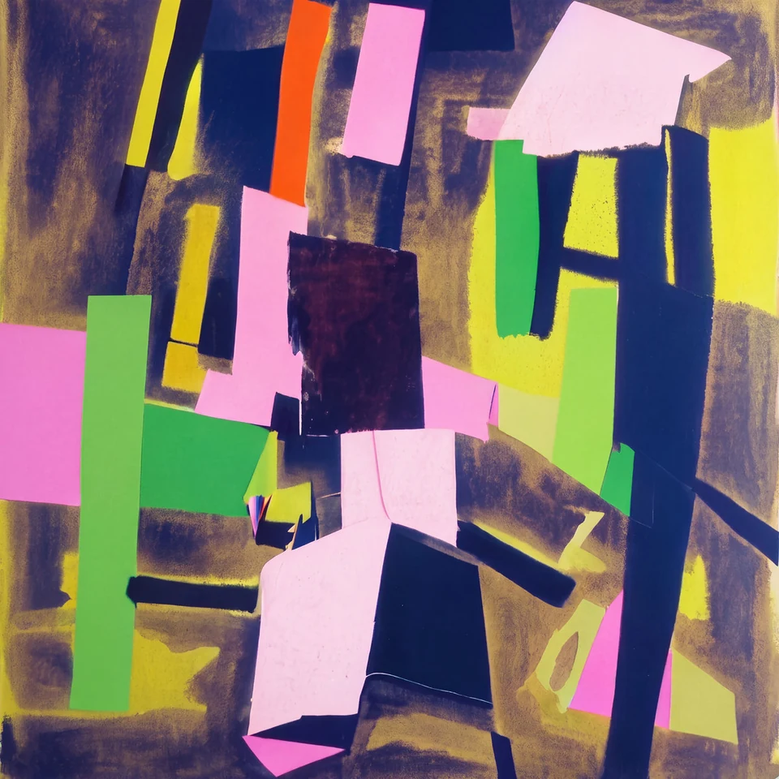

Current work / CF—REC—001
Plastic
Memory
Music and other accidents.
Electronic recordings by Cancelled Futures.
Forthcoming
Listening details, release information, and album notes will be added here when the recording is ready to share.
Explore the visual archive